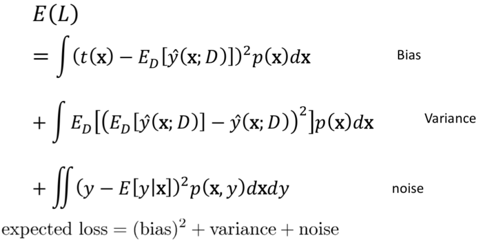
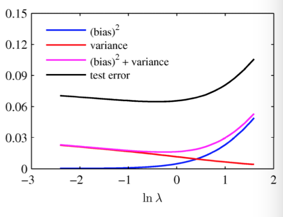
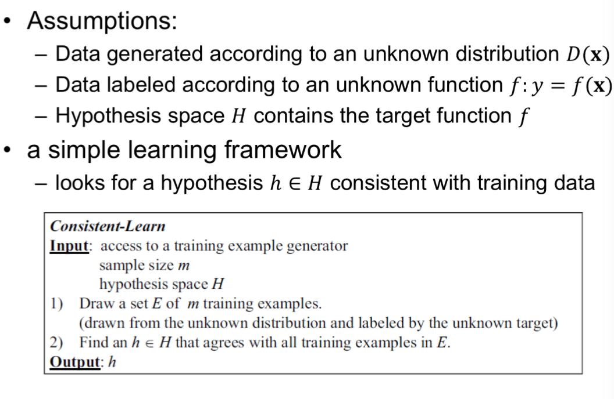
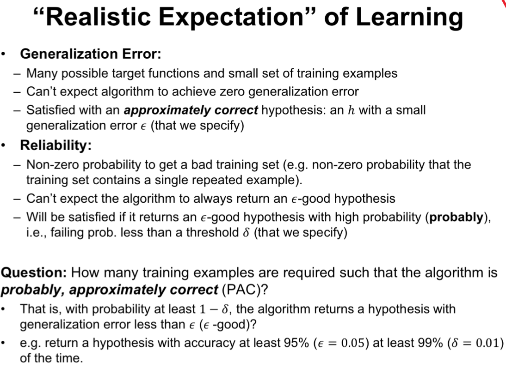
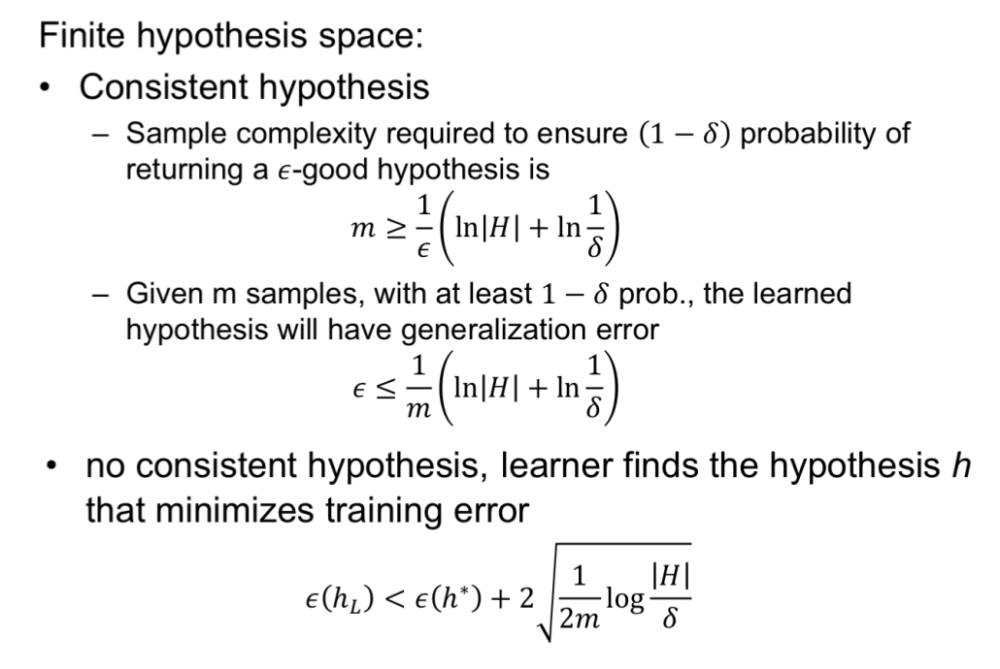
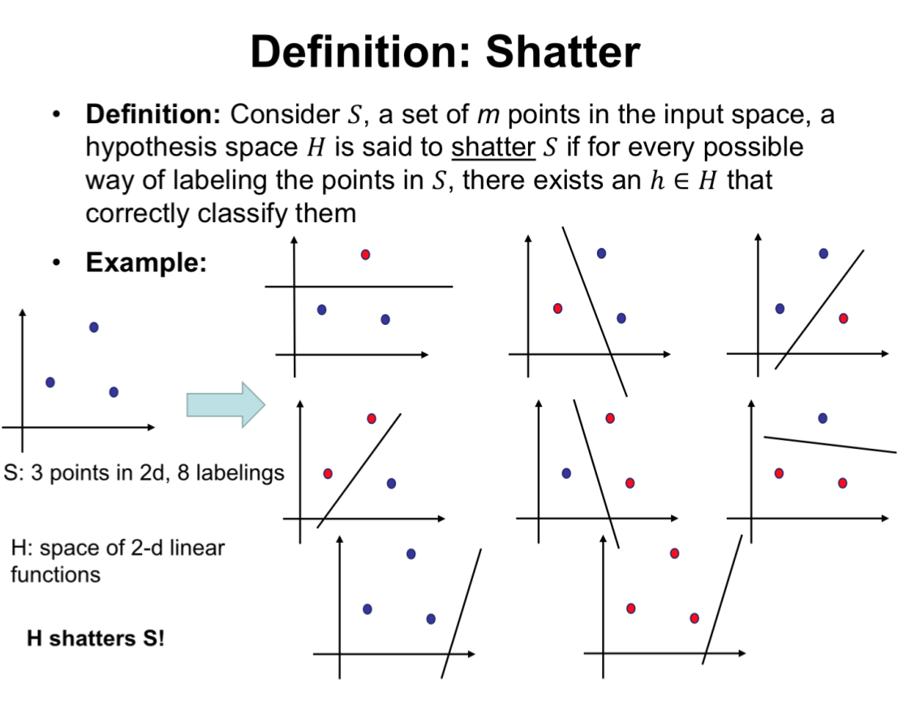
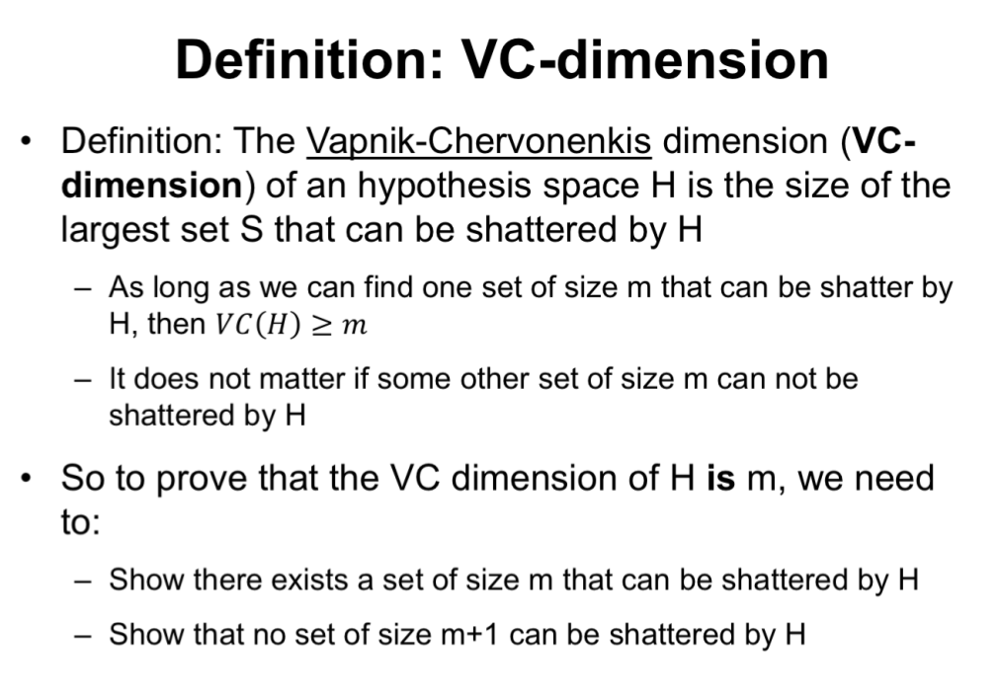
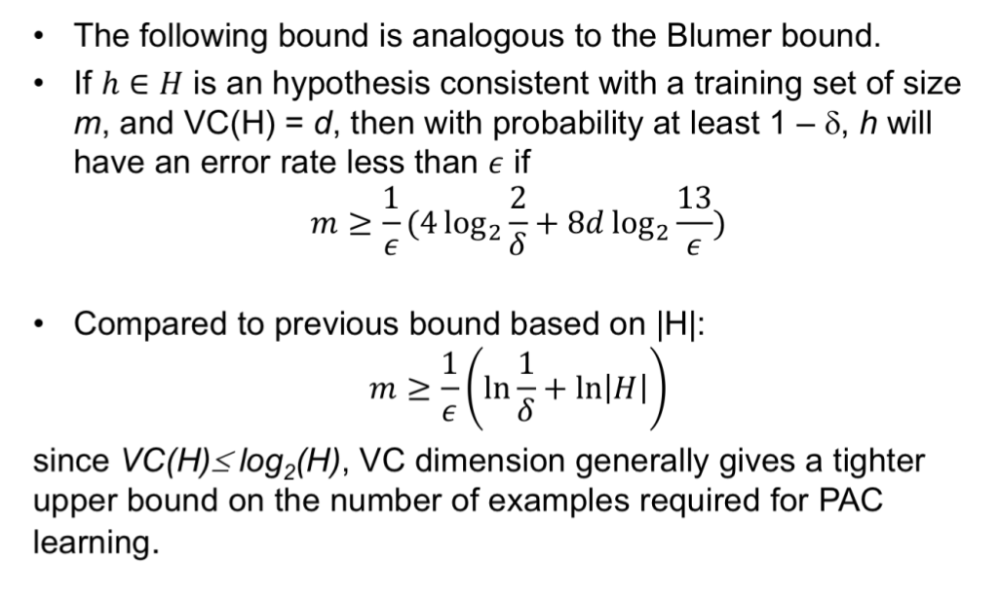
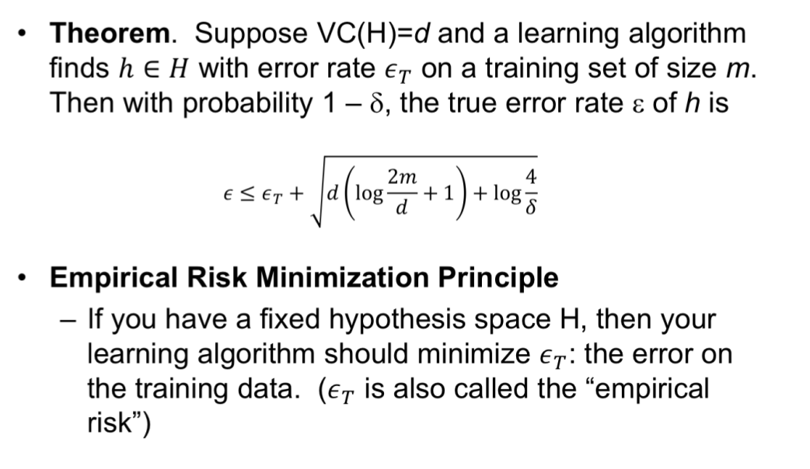
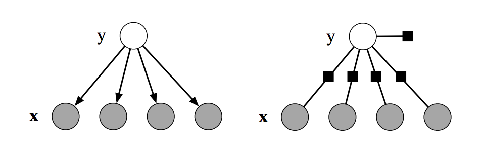

Nonlinear Dimension Reduction
Data often lies on or near a nonlinear low-dimensional curve. We call such low dimension structure manifolds.- Approximate the geodesic distance between every pair of points in the data
- The manifold is locally linear
- Euclidean distance works well for points that are close enough (connecting $i$ and $j$ if $d(i,j) < \epsilon$ or $i$ is one of $j$'s kNN). $d(i,j)$ is Euclidean distance
- For the points that are far apart, their geodesic distance can be approximated by summing up local Euclidean distance. (can be computed as shortest path distance between 2 points)
- Find a Euclidean mapping of the data that preserves the geodesic distance.
We have the some notices about ISOMAP. It preserves global nonlinear structure by approximating geodesic distance. It is sensitive to the parameters used in the graph construction ($k$ in k-isomap and $\epsilon$ in $\epsilon$-isomap). If data is overly sparse, the shortest path approximation to the geodesic distance can be poor because we may not have enough data to construct the manifold.
Up to this point, we complete whole basic idea about dimension reduction. In the next section, we will discuss some important theories in Machine Learning.
Learning Theory
This part, I think is the most boring part of our Machine Learning series, but it is quite important to build stronger intuition and develop the rule of thumb about how to best apply learning algorithms in different settings, so we have to mention in here. So let's get started!
Bias and Variance
First, we will look the analysis of Bias and Variance. We can write the expected loss $E(L)$ as follow:
Where:
- Bias: how well on average can our learning algorithm capture the target function
- Variance: how significantly does our learning algorithm fluctuate depending on the training set
- Noise: inherent to the data generation process itself, not controlled by the choice of learning algorithm
Next we talk about the Bias-Variance Trade-off. Taking an example from an over-regularized model (large $\lambda$ or simple model) will have the high bias but low variance while an under-regularized model (small $\lambda$ or complex models) will have a high variance but low bias.
Then, we talk about computational learning theory. It provides a theoretical analysis of learning and can show us when to expect a learning algorithm to succeed and shows when learning may be impossible. There are typically 3 areas:
- Sample Complexity: How many examples we need to find a good hypothesis?
- Computational Complexity: How much computational power we need to find a good hypothesis?
- Mistake Bound: How many mistakes we will make before finding a good hypothesis?
We have the following framework for Noise Free Learning:
We define the generalization Error of a hypothesis $h$ is the probability that $h$ will make a mistake on a new example randomly drawn from $D$
\[error(h,f) = P(h(x) \neq f(x))\]

Base on types of $H$, we have different cases:
Case 1: Finite Hypothesis Space
We have Blummer Bound for consistent hypothesis and Hoeffding Bound for no consistent hypothesis
Case 2: Infinite Hypothesis Space
For finite spaces, the complexity of a hypothesis space was characterized roughly by $|H|$. For infinite spaces, we will introduce a concept called VC-dimension
We have the following definition:

In general, the VC-dimension for linear separators in $n$-dimensional space is $n+1$. A good heuristic is that VC-dimension is equal to the number of tunable parameters in the model (unless the parameters are redundant). For finite space $H$, we have $VC(H) \leq log_2|H|$. VC dimension measures the complexity of $|H|$
So we have bounds for Consistent Hypotheses:

And Bounds for Inconsistent Hypotheses:

Related Topics:
Major Problems in Machine Learning
Besides 3 basic and important task in Machine Learning comprises of Regression, Classification and Clustering as discussed above, we also have many interesting problems as follow:
- Anomaly Detection: in the discussion above, we talk about outliers and noise are greatly affect the performance of many learning algorithms. Therefore, if we can detect and discards these data in our process, it will boost our learning algorithm so much. The process of detect these data called Anomaly Detection. You can read for an overview at this Wikipedia page: https://en.wikipedia.org/wiki/Anomaly_detection You can read more detail in the survey: http://cucis.ece.northwestern.edu/projects/DMS/publications/AnomalyDetection.pdf
- Reinforcement learning: according to Andrew Ng and his lecture notes in course cs229 (http://cs229.stanford.edu/). He introduces reinforcement learning as follow: " In supervised learning, we saw algorithms that tried to make their outputs mimic the labels y given in the training set. In that setting, the labels gave an unambiguous "right answer" for each of the inputs x. In contrast, for many sequential decision making and control problems, it is very difficult to provide this type of explicit supervision to a learning algorithm... In the reinforcement learning framework, we will instead provide our algorithms only a reward function, which indicates to the learning agent when it is doing well, and when it is doing poorly... It will then be the learning algorithm's job to figure out how to choose actions over time so as to obtain large rewards." You can read more about problems and methods in reinforcement learning at his lecture notes: http://cs229.stanford.edu/notes/cs229-notes12.pdf
- Structured Learning: In the introduction to Generative and Discriminative Model, I had discussed Probabilistic Graphical Model, with the two example models that we discussed, i.e. Logistic Regression and Naive Bayes. In those two models, you can express the relation between many features (variables) and output results. The left figure describes Naive Bayes graphical models. Each features $x$ is independent with each other given the class label $y$. And the right figure describes the Logistic Regression graphical models. The arrows go from the $x$ nodes to the $y$ node. Note this is exactly the opposite of Naive Bayes models. This is two most simplest cases of structured learning. Graphical Models also have more powerful model general data called Bayesian Networks (BN) and Markov Random Fields (MN) and for sequence data such as Hidden Markov Model (HMM) and Conditional Random Field (CRF). 
- Feature Learning: according to Wikipedia (https://en.wikipedia.org/wiki/Feature_learning) "Feature Learning is a set of techniques that learn a feature: a transformation of raw data input to a representation that can be effectively exploited in machine learning tasks... Traditional hand-crafted features often require expensive human labor and often rely on expert knowledge. Also, they normally do not generalize well. This motivates the design of efficient feature learning techniques, to automate and generalize this." Feature learning comprises of Feature Selection (choose a subset of the original set of features, read more at: read more at here: http://www.jmlr.org/papers/volume3/guyon03a/guyon03a.pdf) and Feature Extraction (build a new set of features from the original feature set , read more at: http://www.pca.narod.ru/DimensionReductionBrifReview.pdf).
- Online Learning: All kinds of machine learning algorithm we have discussed so far based on the assumption that the training set are available at the time we train. However, in some cases, we do not have all training data at the same time like the value of stock, or weather data... In these cases, we use another type of approach called online learning. In online learning, the mapping is updated after the arrival of every new data point in a scale fashion. We also discussed one type of Gradient Descent called Stochastic Gradient Descent is aimed with boosting the time processing for Gradient Descent, but also used for this scenario. You can read more at this Wikipedia page https://en.wikipedia.org/wiki/Online_machine_learning
- Semi-supervised Learning: according to this Wikipedia page: (https://en.wikipedia.org/wiki/Semi-supervised_learning) "Semi-supervised learning falls between unsupervised learning (without any labeled training data) and supervised learning (with completely labeled training data). Many machine-learning researchers have found that unlabeled data, when used in conjunction with a small amount of labeled data, can produce considerable improvement in learning accuracy. The acquisition of labeled data for a learning problem often requires a skilled human agent (e.g. to transcribe an audio segment) or a physical experiment (e.g. determining the 3D structure of a protein or determining whether there is oil at a particular location). The cost associated with the labeling process thus may render a fully labeled training set infeasible, whereas acquisition of unlabeled data is relatively inexpensive. In such situations, semi-supervised learning can be of great practical value. Semi-supervised learning is also of theoretical interest in machine learning and as a model for human learning."
- Other problems: Association Rules (https://en.wikipedia.org/wiki/Association_rule_learning), Learn to rank (https://en.wikipedia.org/wiki/Learning_to_rank), Grammar Induction (https://en.wikipedia.org/wiki/Grammar_induction)
Relations between Machine Learning and other fields
As any other subfields of computer science, machine learning is always related to other fields. In this part, I will list some relations between machine learning and:
- Artificial Intelligence: Machine Learning can be considered a subfield of Artificial Intelligence which explores the study and construction of algorithms that can learn from and make predictions on data. Such algorithms operate by building a model from example inputs in order to make data-driven predictions or decisions, rather than following strictly static program instructions. (according to Wikipedia: https://en.wikipedia.org/wiki/Machine_learning). Nowadays, Machine Learning is the most active research field in Artificial Intelligence.
- Data mining, Statistics, Pattern Recognition:
can be expressed in the following diagram. You can read more in
this post: http://machinelearningmastery.com/where-does-machine-learning-fit-in/:

- Probabilistic Graphical Model (PGM): as you can see in the previous discussion, machine learning uses a lot of models inspired from PGM like Logistic Regression, Naive Bayes, Hidden Markov Model and Conditional Random Field.
- Deep Learning: Deep Learning is a new area of Machine Learning research, which has been introduced with the objective of moving Machine Learning closer to one of its original goals: Artificial Intelligence. (according to http://deeplearning.net/)
- Computer Vision and Natural Language Processing: they are both very active research fields which apply machine learning methods. Computer Vision processes vision data like images or videos while Natural Language Processing processes language data like speech, text... Machine Learning methods can be applied in 2 steps: pre-processing data and classification step. For example, Computer Vision uses GMM model to extract foreground from background or NLP use HMM model to POS task.
Machine Learning Libraries
After discussing a lot of "theoretical" concept and definition used in machine learning, in this part, I will introduce some machine learning libraries in 3 major machine learning languages: R, Python and Matlab. You can use this section as a reference when you are looking for a library.
Summary
I have presented to you some Machine Learning algorithms and models. Of course, it is not enough, but it is the most basic and fundamental machine learning algorithms, any other algorithms derived from these algorithms so you should not worry about other topics in machine learning. Just make sure you understand the underlined idea behinds these algorithms, you can understand other algorithms easily.
You can find more machine learning algorithms at here:
- http://machinelearningmastery.com/a-tour-of-machine-learning-algorithms/
- https://en.wikipedia.org/wiki/List_of_machine_learning_concepts
To understand more thoroughly about Machine Learning algorithms, you can read these documentations:
- sklearn - a popular machine learning library of python programming language: User guides all API
- Matlab - a popular scientific and engineering programming language: Overview
- Wikipedia
page about Machine Learning: https://en.wikipedia.org/wiki/Machine_learning
- With Regression task, you have some solutions: Linear Regression, K-Nearest Neighbor Regression, Neural Network Regression, Support Vector Regression, Decision Tree Regression, Ensemble regression (Bagging, Random Forest, Boosting)...
- With Classification task, you have some following solutions: Perceptron (it is the simplest), Logistic Regression, Naive Bayes, Discriminant Analysis, Support Vector Machine, Decision Tree, Neural Network, K-Nearest Neighbors, Ensemble method (Bagging, Random Forest, Boosting)...
- With Clustering task, you have some following solutions: HAC, K-means, GMM, Spectral Clustering, Neural Network clustering...
- With Dimension Reduction: LDA, PCA, Isomaps,...
- Online Learning: K-Nearest Neighbors, Perceptron...
After deciding which group of algorithm to use, you may decide which is the most suitable algorithm for your project, that depends on first:
- Characteristics of the data: if your data is followed any distribution of probabilistic graphical model assume, you should use them. For example, Gaussian Mixture Model assume your data is generated by many Gaussian distributions, you should apply this model over other such as Logistic Regression. Else, you do not know any information about the data, you can use Discriminative models over any Generative models.
- Number of example data: if you have a lot of relevant training examples, you should you Neural Network over other methods because Neural Network is designed for this situation. Or if you just have adequate data, you can use other methods over Neural Network. In case, you have few number of example, you should use decision tree instead or simpler model like Perceptron or Nearest Neighbors.
- Dimension of data: if your data has too many features, you first job may be reducing the data into smaller dimension space by some dimension reduction algorithms like PCA (unknown label) or LDA (known label)
- Other advice: you can read more at here: http://cs229.stanford.edu/materials/ML-advice.pdf and here: http://www.holehouse.org/mlclass/10_Advice_for_applying_machine_learning.html
- Application research: Apply one or combination of machine learning algorithms to an application in computer vision, natural language processing, speech recognition, bioinformatics...
- Algorithmic research: If you are genius and talented, you can completely invent new schools of machine learning algorithm like one of discussed algorithms. Or you can enhance any existing algorithm to work more robust or have better performance in specific domains like in text classification or object recognition in image processing... One of the school of machine learning algorithm you can make great contribution is Graphical Model or currently Deep Learning.
- Theoretical research: this research may focus on proving some interesting (non-trivial) properties of a new or existing learning algorithm. This fields is used for one who are good or very good at math and reasoning skills.
To read more about some current hot topics in Machine Learning, you can read this discussion in Quora: https://www.quora.com/What-are-currently-the-hot-topics-in-Machine-Learning-research-and-in-real-applications
To this point, I have completed discussion about some basic Machine Learning models, concepts and terms. I hope that throughout this series, you can obtain much of interesting knowledge. Again, I acknowledge all information including figures, information and so on on those courses: https://www.coursera.org/learn/machine-learning and http://classes.engr.oregonstate.edu/eecs/fall2015/cs534/ If you have any comments, advice or questions, feel free to leave it in the comment section below. Thanks for you reading!!!